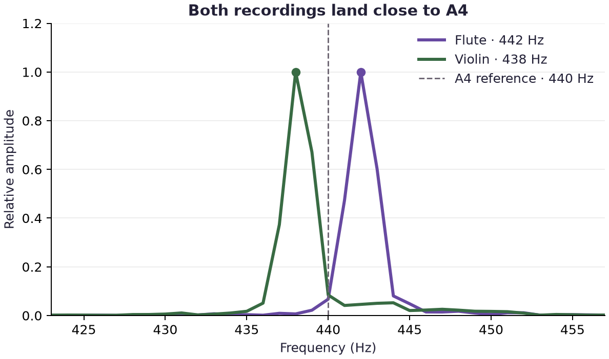

Same note,
different sound
Why do a flute and a violin sound different when they play the same note?
Listen
A4Flute
Violin
Are the pitches the same?
A4 has a reference frequency of 440 Hz, or 440 cycles per second. I used a fast Fourier transform (FFT) in Python to find the strongest frequency near 440 Hz in each recording.
I found 442 Hz for the flute and 438 Hz for the violin. Both were within 2 Hz of the reference.

What gives each instrument its sound?
Harmonics are whole-number multiples of the fundamental frequency. I compared how the power was shared across the first eight harmonics.
For the flute, the first and third harmonics accounted for 41.0% and 40.5% of that power. For the violin, the first accounted for 72.7% and the fourth for 16.9%.

Try adding harmonics
These generated tones show what happens when you add 880 and 1,320 Hz to a 440 Hz tone.
What I found
The recordings have nearly the same pitch and a different mix of harmonics. This helps explain why I can hear a difference between them. My results describe these two clips. Playing technique and the start and end of a note also affect its sound.
Data and method
The recordings come from the University of Iowa collection created by Lawrence Fritts. Sonja Feig plays the flute and Josue Jean-Francois plays the violin. Both recordings are marked mezzo-forte, meaning moderately loud.
University of Iowa Musical Instrument Samples
Method and course connection
I selected one steady second of A4 from each recording, sampled at 44,100 Hz. The flute was played without vibrato and the violin was bowed on the A string. I applied a Hann window to taper the clip edges before the FFT.
I estimated the pitch from the strongest peak between 420 and 460 Hz. For each of the first eight harmonics, I added the power within 15 Hz of its expected frequency. I divided each band's power by the total across those eight bands.
Chapter 6 describes repeating signals as sums of sine and cosine waves. The Fourier transform example on page 32 shows how to find frequencies mixed in one signal.
x(t) ≈ a0 + ∑k=1K [ak cos(2πkf0t) + bk sin(2πkf0t)]
f0 is the fundamental frequency and k is the harmonic number. The weights describe each harmonic's contribution.